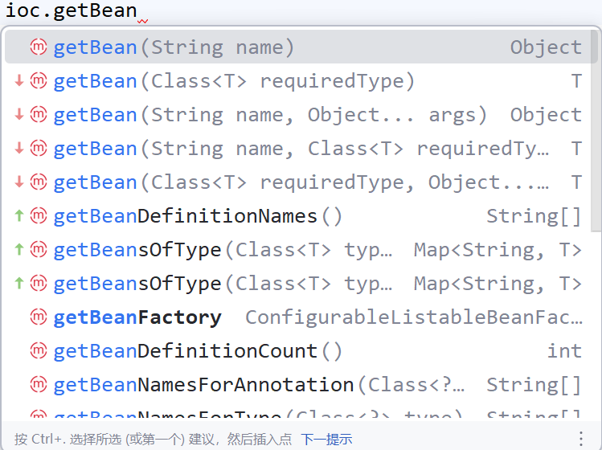
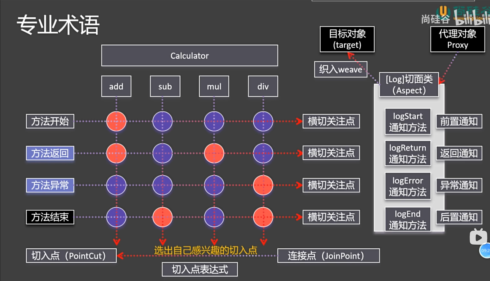
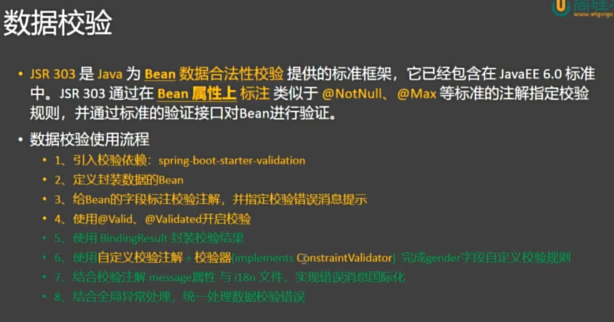
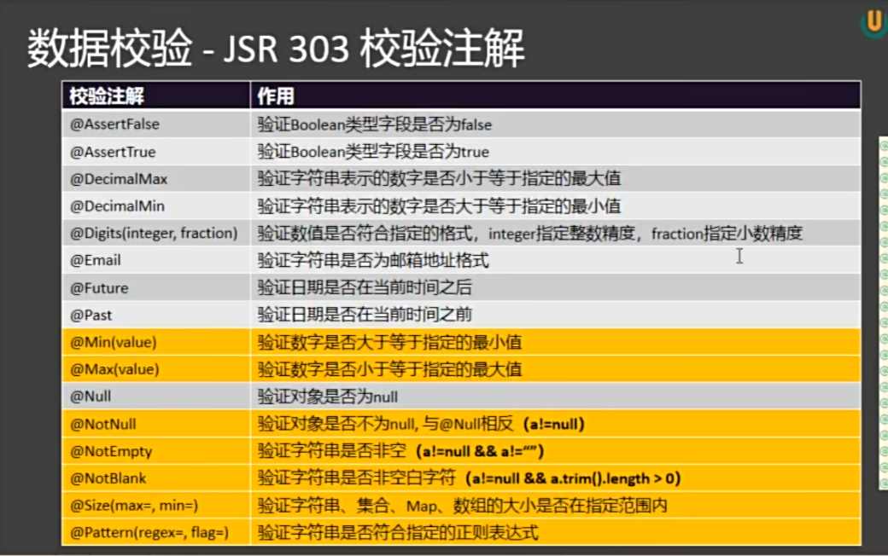
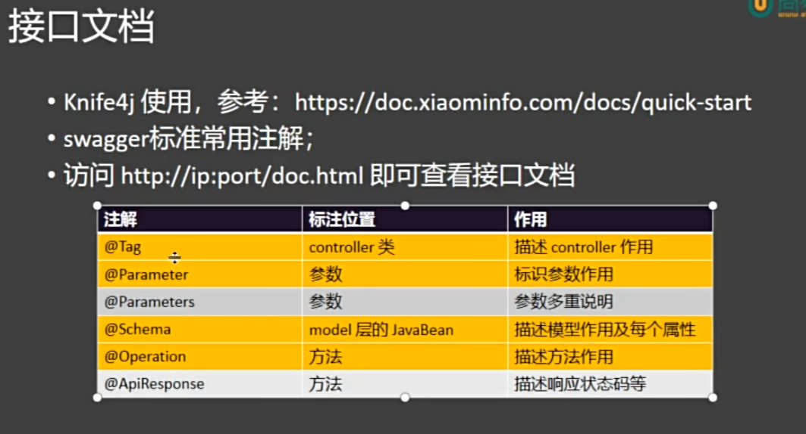

ssm
Spring ：企业级一站式框架

一、Container
1. 组件和容器
组件：具有一定功能的对象，组件的三大特性：(名字、类型)、对象、作用域，组件的名字是全局唯一的。在Spring中，组件的创建时机是容器启动过程中，单实例特性：每次获取直接拿就完事了。
容器：管理组件（创建、获取、保存、销毁）
2. IOC 控制反转
IOC 是一种设计思想，不是具体的技术。它的核心理念是：将对象的创建和依赖管理交给外部容器控制，而不是由对象自己控制。
传统方式下，一个对象主动去创建它所依赖的对象； 而在 IOC 模式下，对象被动地接收依赖对象（由容器提供）。
“控制” 指的是对象依赖的创建与管理。“反转”指的是这种控制权从程序员手中反转给了外部容器（如 Spring 容器）。
3. DI 依赖注入
DI 是实现 IOC 的具体手段。 即：容器在运行时将对象所依赖的实例“注入”进去。
4. 注册组件的不同方法
4.1 @Bean
1. 概念
@Bean 是 Spring 中的一种 显式注册 Bean 的方式，用于告诉 IOC 容器：“我要手动定义并注册一个组件（Bean）到容器中进行管理。” 换句话说，使用 @Bean 标注的方法会由 Spring 调用，其返回对象会被加入到 IOC 容器中，并由容器统一管理生命周期和依赖关系。
2. 主要作用
1）注册 Bean 到容器：通过 @Bean 标注的方法返回的对象，会自动成为 Spring 管理的 Bean。
2）代替 XML 配置：在注解驱动的配置类中，用 @Bean 方法代替 <bean> 标签进行配置。
3）自定义第三方类的注入：当某个类不是由我们自己编写（例如外部库中的工具类），无法直接加上 @Component 注解时，就可以通过 @Bean 手动注册。
3. 获得组件的方法

// 按照组件名称获取组件对象
Student ltb = (Student) ioc.getBean("LiuTianBa");
System.out.println("ltb " + ltb);
// 按照组件类型获取组件对象
Dog dog = ioc.getBean(Dog.class);
System.out.println("bean = " + dog);
// 按照名字加类型，就不需要强转了
4.2 @Conguration注解
@Configuration 是 Spring 中的一个注解，用于标记一个类为配置类。它告诉 Spring 容器：这个类包含一个或多个 @Bean 注解的方法，这些方法将返回需要被 Spring 容器管理的对象（即 Bean）。Spring 会处理这个类，执行其 @Bean 方法，并将返回的对象注册到 IoC 容器中，以便后续依赖注入和使用。
相当于传统的 XML 配置文件（如 applicationContext.xml），只不过现在用 Java 类来编写配置，类型安全、易于调试和重构。
4.3 MVC分层注解
用 @Bean 手动注册组件太麻烦，所以 Spring 提供了一些特殊类的快速注册。注：分层注解能起作用的前提是：这些类必须在主程序所在的包及其子包的程序下。如果非要放到外部包，在主程序上加个ComponentScan实现批量扫描。（但最好还是老老实实的在主程序所在包下面玩）
1. @Controller
用于标记控制层（Controller）的类，表示该类是 Spring MVC 中的控制器组件，负责处理 HTTP 请求。被此注解标记的类会被 Spring 容器自动扫描并注册为 Bean。
2. @Service
用于标记业务逻辑层（Service）的类，表示该类是服务组件，通常包含核心业务逻辑。它是一种特殊的 @Component，语义更明确，便于分层管理。
3. @Repository
用于标记数据访问层（DAO/Repository）的类，表示该类负责与数据库进行交互。该注解还具有自动翻译数据库异常的能力（如将 SQLException 转为 Spring 的数据访问异常），使数据层异常处理更统一。
4.4 注册第三方组件
有两个方法，一是直接用@Bean注解去手动的new一个对象并返回，二是@Import注解去注册第三方类对象。
4.5 @Scope
@Scope 是 Spring 中的一个注解，用于指定由 @Component 或 @Bean 等注解创建的 Bean 实例在 Spring 容器中的作用域（即生命周期和可见范围）。具体而言，它是用来控制一个 Bean 是单例的、每次请求都新建的，还是与 Web 中的请求、会话等绑定的。
常见取值
- singleton（默认）：在整个 Spring 容器中，该 Bean 只有一个共享的实例。
- prototype：每次请求该 Bean 时（如注入或调用
getBean()），都会创建一个新的实例。 - request：每个 HTTP 请求创建一个实例，仅适用于 Web 应用。
- session：每个 HTTP Session 创建一个实例，仅适用于 Web 应用。
- application：每个 ServletContext 生命周期内创建一个实例，仅适用于 Web 应用。
4.6 @Lazy
它指示 Spring 容器在启动时不立即创建被标记的 Bean，而是等到该 Bean 第一次被实际使用（如注入、调用 getBean()）时才进行初始化。
默认情况下，Spring 容器在启动时会预初始化所有 singleton 作用域的 Bean。@Lazy 可用于类上（配合 @Component 等）或方法上（配合 @Bean）。
prototype作用域的 Bean 本身就是懒加载的，每次使用都会新建。懒加载的 Bean 在第一次使用时会有初始化开销，可能影响响应时间。
4.7 FactoryBean接口
FactoryBean 是 Spring 提供的一个接口，用于自定义复杂对象的创建过程。
当某个 Bean 的实例化过程比较复杂（例如需要动态代理、组合多个对象、读取配置生成等），无法通过简单的构造函数或工厂方法完成时，可以通过实现 FactoryBean 接口来精确控制 Bean 的创建逻辑。
- 实现 `FactoryBean` 的类本身也是一个 Bean，会被 Spring 容器管理。
- 从容器中获取该 Bean 时，默认返回的是 `getObject()` 方法的返回值，而不是 `FactoryBean` 实例本身。
- 若想获取 `FactoryBean` 本身，需在 Bean 名称前加 `&`，如 `context.getBean("&myFactoryBean")`。
4.8 @Conditional 条件注册
@Conditional 是 Spring 中的一个注解，用于实现条件化注册 Bean。它可以根据指定的条件来决定是否将某个 Bean 注册到 Spring 容器中。只有当条件满足时，对应的组件（类或方法）才会被加载和实例化。
1. 核心机制
@Conditional接收一个或多个Condition接口的实现类。- Spring 在解析配置时会先检查这些条件的
matches()方法返回值。 - 如果返回
true，则注册 Bean；否则跳过。
2. 衍生注解
@ConditionalOnClass：当类路径中存在指定类时才注册。@ConditionalOnMissingBean：当容器中不存在指定类型的 Bean 时才注册。@ConditionalOnProperty：当配置文件中存在特定属性且值符合条件时注册。@ConditionalOnWebApplication：当应用是 Web 环境时注册。@ConditionalOnExpression：根据 SpEL 表达式结果决定是否注册。
5. 注入组件的各种方式
1. @Autowired
@Autowired 是 Spring 提供的注解，用于自动装配 Bean。它可以标记在字段、构造函数、Setter 方法或普通方法上，Spring 容器会自动从 IoC 容器中查找匹配的 Bean 并注入。
装配流程：
1）先按类型找，找到了就注入
2）若按类型没找到或者找到了多个，就按组件的名字来找（就是把当前的对象名看作是组件名，然后去ioc容器找）
3）若未找到匹配的 Bean，默认会抛出异常
匹配规则
- 默认按**类型**（byType）进行匹配。
- 如果同一类型存在多个 Bean，则结合 `@Qualifier` 注解按名称（byName）区分。
- 若未找到匹配的 Bean，默认会抛出异常；可设置 `required = false` 允许为 null。
# 可以自动装配很多
@ToString
@Controller
public class UserController {
// 自动注入演示
@Autowired
UserService userService;
@Autowired(required = false)
Person bill;
@Autowired
List<Person> arr;
@Autowired
Map<String, Person> map;
@Autowired
ConfigurableApplicationContext ioc;
}
小拓展：@Qualifier("beanname") 可以指定要注入的组件名称（新版本直接用变量名就可以了） @Primary 就是把某个 @Bean 标记的方法返回的组件标为一个特殊的Bean（默认组件），以后主动注入时如果有多个该类型的组件，就用这个特殊的来注入。
特别的，当我们开启了默认组件后，在想用其他的，就得靠@Qualifier了，此时该属性名不能实现组件的切换了。
2. @Resource
@Resource 是 JSR-250 规范提供的注解，用于实现依赖注入。它并非 Spring 特有，但被 Spring 容器支持。
装配流程：
1）默认按名称（byName）进行匹配。即使用字段名或方法名作为 Bean 的名称去查找。
2）如果找不到对应名称的 Bean，则退回到按类型（byType）匹配。
3）可通过 name 属性显式指定要注入的 Bean 名称：@Resource(name = "userService")。
与 @Autowired 的区别
1）@Resource 是 Java 标准注解，@Autowired 是 Spring 特有。
2）@Resource 优先按名称注入，@Autowired 默认按类型注入。
3）@Resource 不支持 required = false 语法。
3. 构造器注入（无注解）
概念：在 Spring 配置类或组件中，通过构造函数的参数来接收依赖对象的注入方式。当类中只有一个构造函数时，Spring 会自动将其参数作为依赖进行注入，无需添加 @Autowired 注解。
作用：实现依赖的强制注入，确保对象创建时所需的所有依赖都已提供，从而保证对象的完整性与不可变性。
特点：
1）无需注解：Spring 4.3+ 版本开始，若类中只有一个构造函数，可省略 @Autowired。
2）推荐使用：构造器注入是 Spring 官方推荐的依赖注入方式，有利于实现不可变对象，便于单元测试。
3）依赖明确：所有必需的依赖都在构造函数中声明，代码可读性强。
4. Setter 方法注入
通过类的 setter 方法将依赖对象注入到 Bean 中。通常配合 @Autowired 注解使用，Spring 容器在实例化对象后，会自动调用对应的 setter 方法完成依赖注入。
5. AwareXXX 感知接口
Aware 接口是 Spring 提供的一系列以 Aware 结尾的接口，用于让 Bean 感知并获取 Spring 容器或其内部组件的底层资源。
作用：当一个 Bean 实现了某个 Aware 接口后，Spring 容器会在初始化该 Bean 时，自动调用其提供的回调方法，将对应的运行时对象注入进去，从而让 Bean 能够访问容器的内部服务。
// 常见 Aware 接口
- `ApplicationContextAware`：获取 `ApplicationContext` 容器本身。
- `BeanFactoryAware`：获取 `BeanFactory` 工厂实例。
- `BeanNameAware`：获取当前 Bean 在容器中的名称。
- `EnvironmentAware`：获取 `Environment` 对象，用于读取配置环境（如 profile、properties）。
- `ResourceLoaderAware`：获取 `ResourceLoader`，用于加载资源文件。
- `ApplicationEventPublisherAware`：获取事件发布器，用于发布自定义事件。
6. @Value
@Value 是 Spring 提供的一个注解，用于将外部值注入到 Bean 的字段(非组件的字段，组件可以通过Autowired自动注入)或方法参数中。
作用：实现配置属性、字面量、SpEL 表达式的注入，使代码可以动态获取配置信息，而不必硬编码。
注入方式：
1）直接@Value(字面量)
2）从配置文件中获取数据：@Value("${key}")
@Value("${app.name}")
private String appName;
3）SpEL（Spring Expression Language）表达式
@Value("#{systemProperties['user.home']}")
private String userHome;
@Value("#{T(java.lang.Math).random() * 100}")
private double randomValue;
综合演示：
public class Cat {
@Value("Tom")
private String name;
@Value("12")
private Integer age;
@Value("${cat.color}")
private String color;
@Value("#{T(java.util.UUID).randomUUID().toString()}")
private String id;
}
7. @PropertySource
@PropertySource 是 Spring 提供的一个注解，用于将外部的 properties 配置文件加载到 Spring 的 Environment 抽象中。
@PropertySource("classpath:app.properties")
补充知识：类路径找资源方式
classpath: 代表自己当前项目的类路径（java以及resources)
classpath*: 从所有包的类路径下面找
在Spring中，提供了资源获取工具类：ResouceUtils 来获取文
8. @Profile
实际也是 @Conditional 的一种，场景：当我们有多个数据源，也就是开发、测试、生成这三套，如果我们用 @Primary 或者@Qualifier，则需要修改代码，但用 @Profile 可以输入一个环境表示，从而根据不同的环境表示来注册组件。
具体使用：
1）先定义环境表示，默认是 ”default“ ：自定义方法就是去资源文件下面定义。 spring.profiles.active=生产环境
2）使用 @Profile 来实现条件注册
6. 组件生命周期
Spring 容器中每个 Bean 都有其完整的生命周期，从创建、初始化、使用到销毁。Spring 提供了多种机制让开发者可以在特定生命周期阶段插入自定义逻辑。
第一种：通过 @Bean 注解去指定 init 以及 destory。
第二种：去实现 InitializingBean 以及 DisposableBean

具体生命周期如下：
1、实例化（Instantiation） ：Spring 容器根据配置或注解创建 Bean 的实例（通过构造函数或工厂方法）。
2、属性赋值（Populate Properties）：容器将配置中定义的属性值或依赖对象注入到 Bean 中（如通过 @Autowired、@Value 等）。
3、初始化（Initialization）
- 补充: 调用后置处理器的前置操作
- 调用 `@PostConstruct` 注解的方法。
- 调用 `InitializingBean` 的 `afterPropertiesSet()` 方法。
- 调用自定义的初始化方法（通过 `@Bean(initMethod = "init")` 指定）。
- 应用 BeanPostProcessor 的 `postProcessBeforeInitialization` 和 `postProcessAfterInitialization`。
4、使用（In Use）：Bean 已准备好，可以被其他组件使用或对外提供服务。
5、销毁（Destruction）：
- 调用 `@PreDestroy` 注解的方法。
- 调用 `DisposableBean` 的 `destroy()` 方法。
- 调用自定义的销毁方法（通过 `@Bean(destroyMethod = "cleanup")` 指定）。
- 仅适用于 singleton 作用域的 Bean，在容器关闭时执行。

7. BeanPostProcessor
之前 Bean 的生命周期其实只是在人家初始化完，或者销毁前让你做点其他的，而不能影响这个过程。
而 BeanPostProcessor 能够在生命周期过程中正在的修改这个 Bean。
二、AOP ⭐
概念：Aspect Oriented Programming（AOP）是 Spring 框架的重要特性之一，它允许开发者将横切关注点（如日志、事务、安全、缓存等）与核心业务逻辑分离。
本质：AOP 的底层实现原理确实是代理模式。Spring 在运行时为目标对象创建一个代理对象，当调用目标方法时，实际执行的是代理对象的方法。代理对象可以在目标方法执行的前后，甚至环绕执行自定义逻辑，从而实现功能增强。

1. AOP 编码实现
1）导入 AOP 依赖
<dependency>
<groupId>org.springframework.boot</groupId>
<artifactId>spring-boot-starter-aop</artifactId>
</dependency>
2）编写切面 Aspect 注：记得用 @Aspect 来标注切面类
3）编写通知方式
4）指明这些通知方法何时何地运行（切入点表达式） 注：可以将这些表达式抽离出来
// 切入点表达式抽离
@Pointcut("execution(* person.liutianba.spring02Aop.calculator.MathCal.*(..))")
void pointCut(){}
@Before("pointCut()")
public void logStart(JoinPoint joinPoint){
System.out.println("【切面 - 日志】开始... 方法名:" + joinPoint.getSignature().getName() + "参数为：" + Arrays.asList(joinPoint.getArgs()).toString());
}
5）测试AOP动态织入
@Aspect // 切面类
@Component
public class LogAspect {
/**
* 告诉 Spring，以下通知方法何时何地运行
* 何时：
* @Before,
* @After(不管正常异常，都运行),
* @AfterReturning(正常返回结果),
* @AfterThrowing(出现异常),
* @Around
*
* 何地：切入点表达式
* execution(方法的全签名)
* 全写法 ：public int 全类名.方法名(参数列表) throws 异常
* 省略写法：int 方法名(参数列表) int *(int, int)
* * 表示任意长度字符串
*
*/
@Before("execution(int *(int,int))")
public void logStart(){
System.out.println("【切面 - 日志】开始...");
}
@After("execution(int *(int,int))")
public void logEnd(){
System.out.println("【切面 - 日志】结束...");
}
@AfterThrowing("execution(int*(int, int))")
public void logException(){
System.out.println("【切面 - 日志】异常...");
}
@AfterReturning(pointcut = "execution(int *(int, int))", returning = "result")
public void logReturn(Object result){
System.out.println("【切面 - 日志】结果：" + result);
}
}
2. AOP 切入点表示式写法
切入点（Pointcut）用于定义 哪些方法需要被 AOP 增强。它是通过一个表达式来匹配类和方法的，只有匹配成功的方法才会执行通知（Advice）。

1. excution(方法签名)
切入某个接口下的所有方法：execution(* person.liutianba.spring02Aop.calculator.MathCal. ***(..))
注：只要有了切面类再切入，那么这个类的实例在容器中就不再是原本的类型了，而是CGLIB产生的一个代理对象。
/**
* 告诉 Spring，以下通知方法何时何地运行
* 何时：
* @Before,
* @After(不管正常异常，都运行),
* @AfterReturning(正常返回结果),
* @AfterThrowing(出现异常),
* @Around
*
* 何地：切入点表达式
* execution(方法的全签名)
* 全写法 ：public int 全类名.方法名(参数列表) throws 异常
* 省略写法：int 方法名(参数列表) int *(int, int)
* *：表示任意长度字符串
* ..：
* 1）参数位置：表示多个参数，任意类型
* 2）类型位置：表示多个层级
* @annotation(com.spzx.common.security.annotation.RequiresLogin) || "
+ "@annotation(com.spzx.common.security.annotation.RequiresPermissions)
*
*
*
*/
2. args
匹配那些参数列表一直的所有方法
3. @args
匹配参数列表有特定注解的方法
3. 获取 AOP 的连接点的信息
直接传一个连接点，然后通过它获得信息。
一般就是通过getSignature（）获得方法签名，然后通过方法签名就可以获得该方法的详细信息。
@Before("execution(* person.liutianba.spring02Aop.calculator.MathCal.*(..))")
public void logStart(JoinPoint joinPoint){
System.out.println("【切面 - 日志】开始... 方法名:" + joinPoint.getSignature().getName());
}
4. 多切面执行执行顺序
我的理解：单个切面实际就是把目标方法做了个代理，当有其他切面时，它会把代理后的方法看成是一个要代理的目标方法，然后去代理，所以，多个切面的执行顺序是由谁先代理，谁后代理决定的。
注：默认代理顺序是按类名自然排序的，但也可以通过 @Order 注解手动指定。@Order 值越小，优先级越高，在代理链中位于外层。

5. 环绕通知 @Around 重点！！！
@Before、@After 等通知属于“感知型”增强，只能在方法执行前后执行额外逻辑，无法控制目标方法的执行流程（如跳过方法、修改参数、改变返回值）。而 @Around 是最强大的通知类型，它完全包裹目标方法，可以：
- 控制是否执行目标方法
- 修改方法参数
- 修改返回值
- 捕获并处理异常 (这里建议抛出异常，如果不抛出的话，出了异常别人都感知不到)
- 短路返回（不调用目标方法）
5.1 固定写法
@Aspect
@Component
public class LogAspect {
@Around("execution(* com.example.service.*.*(..))")
public Object around(ProceedingJoinPoint joinPoint) throws Throwable {
// 获取方法签名
Signature signature = joinPoint.getSignature();
String methodName = signature.getName();
// 获取方法参数
Object[] args = joinPoint.getArgs();
System.out.println("【环绕前置】方法 " + methodName + " 开始执行，参数：" + Arrays.toString(args));
Object result = null;
try {
// -----------------------------
// 核心：决定是否继续执行目标方法
// 可在此处修改参数
// args[0] = "modifiedArg";
result = joinPoint.proceed(args); // 执行目标方法（可传入修改后的参数）
// -----------------------------
System.out.println("【环绕返回】方法 " + methodName + " 执行成功，返回值：" + result);
return result; // 可在此处修改返回值
} catch (Exception e) {
System.out.println("【环绕异常】方法 " + methodName + " 执行出错：" + e.getMessage());
throw e; // 可以处理或包装异常
} finally {
System.out.println("【环绕后置】方法 " + methodName + " 执行结束");
}
}
}
6. AOP 的应用场景
pass(懒得写了)
三、事务⭐
Spring 中的事务是对数据库事务的抽象和管理机制，其核心目标是：让开发者无需手动管理 commit 和 rollback，就能确保一组数据库操作具备 ACID 特性。
1、Spring 连接数据库的方法
1）导入依赖：数据库驱动、spring-boot-starter- data-jdbc
2）配置数据库连接信息：在 xxx.properties 中的 spring.datasource
3）可以直接使用 DataSource、 JDBCTemplate
2、开启事务管理
1）在启动类上加一个注解：@EnableTransactionManagement 指明开启事务管理
2）之后在需要事务管理的方法上添加一个 @Transactional 即可进行事务管理
3、事务管理的原理
Spring 的事务管理是基于 AOP（面向切面编程） + 拦截器模式 实现的，其核心原理是通过代理机制，在目标方法执行前后自动控制数据库事务的开启、提交或回滚。
3.1 动态代理
当一个方法被 @Transactional 注解标记时：
- Spring 容器会为该 Bean 创建一个代理对象（Proxy）。
- 原始对象的方法调用会被代理拦截。
- 代理在方法执行前开启事务，执行后根据结果决定提交或回滚。
3.2 关键组件
| 组件 | 作用 |
|---|---|
PlatformTransactionManager |
事务管理器接口，负责实际的事务操作（如 DataSourceTransactionManager）。 |
@Transactional |
声明式事务注解，定义事务属性（传播行为、隔离级别等）。 |
TransactionInterceptor |
事务拦截器，AOP 的通知逻辑，真正执行“开启 → 执行 → 提交/回滚”的流程。 |
TransactionSynchronizationManager |
绑定当前线程与事务资源（如 Connection），保证同一个事务中使用同一个数据库连接。 |
3.3 执行流程
1. 调用 @Transactional 方法
↓
2. 代理拦截（TransactionInterceptor）
↓
3. 获取事务管理器（PlatformTransactionManager）
↓
4. 开启事务（doBegin） → 获取 Connection 并绑定到当前线程
↓
5. 执行业务方法（所有 DAO 操作共享同一 Connection）
↓
6. 方法正常结束 → 提交事务
↓
7. 异常抛出 → 回滚事务（默认 RuntimeException 和 Error）
↓
8. 清理资源（解绑 Connection）
4、@Transactional
@Transactional 是 Spring 框架提供的声明式事务管理注解，开发者只需在方法或类上添加该注解，即可自动获得事务支持，无需手动编写 commit 和 rollback 代码。
4.1 该注解的属性
timeout：当事务超过这个事件后，就会回滚。
readOnly：只读优化（优化操作，就不需要开启一堆事务管理相关的东西了）
rollbackFor：Defines zero (0) or more exception types, which must be subclasses of Throwable, indicating which exception types must cause a transaction rollback.
注：运行时异常都回滚，而编译时异常不回滚。而rollbackFor就是用来指定那些异常需要回滚
下面，重点属性单独介绍
4.2 隔离级别 isolation
隔离性（Isolation） 是事务 ACID 特性中的 "I"，它控制的是：多个事务并发执行时，彼此之间的可见性和影响程度。如果完全不隔离 → 数据混乱。如果完全隔离 → 性能极差，几乎串行执行。所以，数据库提供了 不同的隔离级别，在数据一致性和并发性能之间做权衡。
一些并发问题介绍：
| 问题 | 定义 | 示例 |
|---|---|---|
| 脏读（Dirty Read） | 一个事务读取了另一个事务尚未提交的数据。 | 事务 A 修改了数据但未提交，事务 B 读到了这个修改；如果 A 回滚，B 读到的就是“脏”数据。 |
| 不可重复读（Non-repeatable Read） | 在同一个事务中，两次读取同一行数据，结果不同。 | 事务 A 第一次读 id=1 的记录为 name='张三'；事务 B 将其改为 '李四' 并提交；A 再次读取，变成了 '李四'。 |
| 幻读（Phantom Read） | 在同一个事务中，两次执行相同查询，返回的行数不同（出现了“幻影”行）。 | 事务 A 查询 age > 18 有 3 条记录；事务 B 插入一条 age=20 的记录并提交；A 再次查询，变成 4 条。 |
隔离级别：
| 隔离级别 | 脏读 | 不可重复读 | 幻读 | 说明 |
|---|---|---|---|---|
| READ UNCOMMITTED（读未提交） | ✅ 允许 | ✅ 允许 | ✅ 允许 | 最低级别，性能最好，但数据最不安全。 |
| READ COMMITTED（读已提交） | ❌ 禁止 | ✅ 允许 | ✅ 允许 | 大多数数据库默认级别（如 Oracle、SQL Server）。只能读已提交的数据。 |
| REPEATABLE READ（可重复读） | ❌ 禁止 | ❌ 禁止 | ✅ 允许（部分数据库不允许） | MySQL 默认级别。保证事务内多次读取同一数据结果一致。 |
| SERIALIZABLE（串行化） | ❌ 禁止 | ❌ 禁止 | ❌ 禁止 | 最高级别，事务串行执行，避免所有并发问题，但性能最差。 |
4.3 传播行为 propagation
传播行为（Propagation Behavior） 是指：当一个事务方法被另一个事务方法调用时，事务该如何进行传播或处理。换句话说： "我已经在一个事务里了，现在又调用了另一个标有 @Transactional 的方法，那这个新方法是加入当前事务？新建一个事务？还是不使用事务？”
这就是 事务的传播行为 要解决的问题。
类比理解
想象你正在做一顿饭（外层事务），过程中需要洗菜、切菜、炒菜。
- 如果“洗菜”也是一个独立的任务（内层方法），但它必须和做饭在同一个流程中完成 → 那它就**加入当前事务**。
- 如果“接个电话”是一个操作，它不影响做饭 → 它可以**不参与事务**。
- 如果“尝一口咸淡”失败了，你想回滚整个做饭过程 → 那它就和外层事务**绑定在一起**。
- 如果“烧一壶水”是另一个独立任务，即使它失败也不影响做饭 → 它应该**开启一个新事务**。
这就是不同传播行为的现实映射。
Spring 中的 7 种传播行为
| 传播行为 | 含义 |
|--------|------|
| `REQUIRED`（默认） | 如果当前有事务，就加入；没有就新建一个。 |
| `REQUIRES_NEW` | 无论当前是否有事务，都**挂起当前事务，新建一个新事务**。 |
| `SUPPORTS` | 支持当前事务，但如果当前没有事务，也不创建新事务（以非事务方式运行）。 |
| `NOT_SUPPORTED` | 不支持事务，**以非事务方式执行**，如果当前有事务则将其挂起。 |
| `MANDATORY` | 必须在事务中运行，如果当前没有事务，则抛出异常。 |
| `NEVER` | 不能在事务中运行，如果当前有事务，则抛出异常。 |
| `NESTED` | 如果当前有事务，则在嵌套事务中执行；否则新建一个事务。（类似 `REQUIRED`，但可独立回滚）
四、SpringMvc⭐⭐
1. RequestMapping
路径映射：负责映射方法与请求路径。
路径位置通配符：*匹配任意多字符 ** 匹配任意多层路径 ？匹配单个字符 如果有多个方法都能匹配上请求路径，则按着精确度来处理，也就是越精确，越优先。
请求限定：
1）method
2）params
3）headers
4）consumes
5）produces
2. SpringMvc 中的请求处理
1、接收普通请求参数（?key=value）
适用于 GET 请求的查询参数 或 POST 请求的表单数据。直接绑定或者用 @RequestParam 注解
2、接受路径变量（RESTful 风格）
@GetMapping("/user/{id}")
public String getUserById(@PathVariable Long id) {
System.out.println("用户ID：" + id);
return "user";
}
3、接收请求体（JSON/XML）数据
@PostMapping("/user")
public String createUser(@RequestBody User user) {
System.out.println("创建用户：" + user.getName());
return "created";
}
- 客户端设置
Content-Type: application/json - 后端有 Jackson/Gson 等 JSON 转换器（Spring Boot 默认集成）
4、接收文件上传
@PostMapping("/upload")
public String uploadFile(@RequestPart("file") MultipartFile file,
@RequestParam String description) {
System.out.println("文件名：" + file.getOriginalFilename());
System.out.println("描述：" + description);
return "uploaded";
}
5、自动绑定对象（表单或 JSON）
public class User {
private String name;
private int age;
// getter/setter
}
@PostMapping("/user/form")
public String createUserForm(User user) {
System.out.println("用户：" + user.getName());
return "success";
}
- 表单提交 → 使用
User user - JSON 提交 → 必须加
@RequestBody
6、接收请求头（Header）信息
@GetMapping("/info")
public String getInfo(@RequestHeader("User-Agent") String userAgent,
@RequestHeader("Authorization") String token) {
System.out.println("浏览器：" + userAgent);
System.out.println("Token：" + token);
return "info";
}
7. 接收 Cookies
@GetMapping("/cookie")
public String getCookie(@CookieValue("JSESSIONID") String sessionId) {
System.out.println("Session ID：" + sessionId);
return "cookie";
}
8、获取整个http请求
/**
*
* @param httpEntity 它的泛型就是要把 http 请求体转为这个泛型
* @return
*/
@PostMapping("/test03")
public String test03(HttpEntity<User> httpEntity){
// 获得请求头
httpEntity.getHeaders().forEach((n, v) -> System.out.println(n + ":" + v));
// 获得请求参数
System.out.println("user = " + httpEntity.getBody());
return "ok_test03";
}
3. SpringMvc 中的响应处理
1. 返回json
注解 @ResponseBody 能够将方法的返回值自动的封装为json，现在都用组合注解 @RestController
2. 文件下载（返回的数据是让浏览器下载的）

@RequestMapping("/test03")
public ResponseEntity<byte[]> download() throws Exception{
FileInputStream fileInputStream = new FileInputStream("E:\\school_work\\glories\\头像\\2.jpg");
byte[] alls = fileInputStream.readAllBytes();
return ResponseEntity.ok().contentType(MediaType.APPLICATION_OCTET_STREAM).contentLength(alls.length)
.header("Content-Disposition", "attachment;filename=2.jpg")
.body(alls);
}
问题1：文件名如果是中文会乱码
问题2：文件太大会出现oom
@RequestMapping("/test03")
public ResponseEntity<InputStreamResource> download() throws Exception{
FileInputStream fileInputStream = new FileInputStream("E:\\school_work\\glories\\头像\\2.jpg");
// 一口气读会异常
// byte[] alls = fileInputStream.readAllBytes();
InputStreamResource resource = new InputStreamResource(fileInputStream)
// 解决中文乱码：把中文转码成utf-8
String name = URLEncoder.encode("哈哈.jpg", "utf-8");
return ResponseEntity.ok().contentType(MediaType.APPLICATION_OCTET_STREAM).contentLength(fileInputStream.available())
.header("Content-Disposition", "attachment;filename="+ name)
.body(resource);
}
五、Spring Mvc 的最佳实践！！！⭐⭐⭐
1. RESTful风格⭐⭐⭐
REST 就是把任何web请求看作是对资源的操作，对同一资源的不同操作，他们的请求路径是一样的，具体是通过不同的动作来区分不同处理方法的。
2. 拦截器⭐⭐
1. 概念
拦截器（Interceptor） 是 Spring MVC 提供的一种机制，用于在 请求处理的前后 对请求进行预处理或后处理，而无需修改每个控制器的代码。它类似于 Servlet 中的 Filter（过滤器），但更贴近 Spring MVC 的执行流程，主要用于：
- 权限校验（如登录检查）
- 日志记录
- 性能监控（统计请求耗时）
- 请求参数预处理
- 防止重复提交
- 编码设置等
2. 执行时机（与请求生命周期的关系）
请求 → preHandle() → (目标方法 execute) → postHandle() → (视图渲染) → afterCompletion()
3. 三个核心方法
| 方法 | 触发时机 | 返回值含义 |
|---|---|---|
boolean preHandle(HttpServletRequest, HttpServletResponse, Object handler) |
控制器方法执行前 | true：放行，继续执行；false：中断，不再执行后续操作 |
void postHandle(HttpServletRequest, HttpServletResponse, Object handler, ModelAndView modelAndView) |
控制器方法执行后，视图渲染前 | 通常用于修改 Model 或 View |
void afterCompletion(HttpServletRequest, HttpServletResponse, Object handler, Exception ex) |
整个请求完成之后（视图渲染完毕） | 用于资源清理、异常处理等 |
⚠️ 注意： -
postHandle和afterCompletion只有在preHandle返回true时才会执行。 - 如果preHandle返回false，则后续都不会执行。
4. 实现方式
Spring MVC 中实现拦截器有两种主要方式：第二种过时了，就不记录了。
✅ 方式一：实现 HandlerInterceptor 接口（推荐），
import org.springframework.web.servlet.HandlerInterceptor;
import javax.servlet.http.HttpServletRequest;
import javax.servlet.http.HttpServletResponse;
public class LoginInterceptor implements HandlerInterceptor {
@Override
public boolean preHandle(HttpServletRequest request, HttpServletResponse response, Object handler) throws Exception {
// 模拟登录检查
Object user = request.getSession().getAttribute("user");
if (user == null) {
response.sendRedirect("/login"); // 未登录，跳转到登录页
return false; // 中断请求
}
return true; // 放行
}
@Override
public void postHandle(HttpServletRequest request, HttpServletResponse response, Object handler, ModelAndView modelAndView) throws Exception {
// 可以修改 modelAndView，比如添加公共数据
System.out.println("postHandle: 控制器执行完毕");
}
@Override
public void afterCompletion(HttpServletRequest request, HttpServletResponse response, Object handler, Exception ex) throws Exception {
// 请求结束，可用于清理资源
System.out.println("afterCompletion: 请求已完成");
}
}
当写完自定义的拦截器后，要把它注册到 Spring MVC 的拦截器链中。（通过 WebMvcConfigurer）
@Configuration
public class WebConfig implements WebMvcConfigurer {
@Override
public void addInterceptors(InterceptorRegistry registry) {
registry.addInterceptor(new LoginInterceptor())
.addPathPatterns("/admin/**") // 拦截哪些路径
.excludePathPatterns("/login", "/css/**", "/js/**"); // 放行哪些路径
}
}
5. Interceptor 的执行顺序
preHandle顺序执行，postHandle, afterCompletation 倒序执行，有一个拦截器不放行，所有 postHandle 都不能执行， 那些放行的拦截器的 afterCompletation 可以执行。
6. Interceptor 与 Fliter 的区别
Interceptor（拦截器）和 Filter（过滤器）都用于对请求进行预处理，但 Filter 是 Servlet 规范的一部分，作用于整个 Web 请求生命周期，能拦截所有请求（包括静态资源），且不依赖 Spring 容器；而 Interceptor 是 Spring MVC 提供的机制，只拦截控制器（Controller）相关的请求，可以方便地注入 Spring Bean，执行时机更精细（如 preHandle、postHandle），更适合在业务逻辑层进行权限校验、日志记录等操作
3. 异常处理⭐⭐⭐
异常处理分为两类：编程式（如 try-catch）和 声明式。在 Spring 中，推荐使用 声明式异常处理，因为它更简洁、可维护性强，能实现全局统一处理。

1. 实现方式
Spring MVC 提供了两个核心注解来实现声明式异常处理：
方式一：@ExceptionHandler —— 处理单个 Controller 的异常
适用于某个控制器内部的异常处理。
@RestController
public class UserController {
@GetMapping("/user/{id}")
public User getUser(@PathVariable Long id) {
if (id == -1) {
throw new UserNotFoundException("用户不存在");
}
return userService.findById(id);
}
// 使用 @ExceptionHandler 处理该 Controller 内部抛出的异常
@ExceptionHandler(UserNotFoundException.class)
public ResponseEntity<String> handleUserNotFound(UserNotFoundException ex) {
return ResponseEntity.status(HttpStatus.NOT_FOUND).body("用户未找到：" + ex.getMessage());
}
}
- 只作用于当前 Controller
- 可以处理特定类型的异常
- 不影响其他 Controller
方式二：@ControllerAdvice —— 全局异常处理
用于集中处理 所有 Controller 的异常，是实现“全局统一异常处理”的最佳方式。
@ControllerAdvice
@ResponseBody
public class GlobalExceptionHandler {
@ExceptionHandler(UserNotFoundException.class)
public ResponseEntity<String> handleUserNotFound(UserNotFoundException ex) {
return ResponseEntity.status(HttpStatus.NOT_FOUND).body("用户未找到：" + ex.getMessage());
}
@ExceptionHandler(Exception.class)
public ResponseEntity<String> handleGenericException(Exception ex) {
return ResponseEntity.status(HttpStatus.INTERNAL_SERVER_ERROR).body("服务器内部错误：" + ex.getMessage());
}
}
- 使用
@ControllerAdvice注解标记类 - 所有 Controller 都会自动应用该异常处理器
- 可以处理任意类型异常（如
Exception.class） - 支持返回 JSON、视图页面等
2. 项目中最佳实践
在实际项目开发中，异常种类繁多，无法穷尽所有情况。因此，后端应聚焦于核心业务逻辑的正确实现，当遇到非法状态、数据校验失败、资源不存在等异常情况时，无需手动处理每一个异常，而是通过主动抛出有意义的异常，提前终止当前业务流程。
这些异常由全局异常处理器（如 @ControllerAdvice + @ExceptionHandler）统一捕获，转换为标准的错误响应格式（如 JSON 错误码、消息提示），返回给前端。这样既保证了代码的简洁性和可维护性，又能让前端清晰感知到异常类型和原因，进而做出相应的用户提示或重试操作。
实现方式:
1）先自定义一个业务异常类，属性有code，mes
2）再去用枚举类列出系统中所有可能的业务错误
3）当出现业务错误时，直接抛出业务异常即可
4）之后就可以交给全局异常处理器或者是本类下的异常处理器处理了
4. 数据校验⭐⭐⭐


1) 导入场景启动器
<dependency>
<groupId>org.springframework.boot</groupId>
<artifactId>spring-boot-starter-validation</artifactId>
</dependency>
2）编写校验注解 @NotNull, @Max, @Min, @Email ...
3）告诉 spring MVC 开启校验 @valid
public R add(@RequestBody @Valid Employee employee, BindingResult bindingResult)
4）获得校验结果：BindResult
public R add(@RequestBody @Valid Employee employee, BindingResult bindingResult){
if (!bindingResult.hasErrors()){
return R.success();
}
HashMap<String, String> errorMap = new HashMap<>();
bindingResult.getFieldErrors().forEach(fieldError -> {
errorMap.put(fieldError.getField(), fieldError.getDefaultMessage());
});
return R.error(500, "校验失败", errorMap);
}
1. BindResult
它是用来去获得校验结果的。可以获得校验的字段以及校验的结果。
2. 全局异常处理校验失败
// 处理校验异常
@ExceptionHandler(MethodArgumentNotValidException.class)
public R handleMethodArgumentNotValidException(MethodArgumentNotValidException e) {
// 获得校验结果
BindingResult bindingResult = e.getBindingResult();
List<FieldError> fieldErrors = bindingResult.getFieldErrors();
HashMap<String, String>data = new HashMap<>();
fieldErrors.forEach(fieldError -> {
data.put(fieldError.getField(), fieldError.getDefaultMessage());
});
return R.error(500, "校验失败", data);
}
3. 自定义校验器
1）正则表达式
@Pattern(regexp="^男|女&" , message = "性别只能是男或女")
2）自定义注解（写一个自定义注解，然后绑定一个自定义校验器）
==========================================================================================
1：自定义校验注解（抄源码即可）
@Documented
@Constraint(
validatedBy = {GenderValidator.class}
)
@Target({ElementType.FIELD})
@Retention(RetentionPolicy.RUNTIME)
public @interface Gender {
String message() default "{jakarta.validation.constraints.Email.message}";
Class<?>[] groups() default {};
Class<? extends Payload>[] payload() default {};
}
===================================================================================
2：自定义校验器（实现ConstraintValidator接口）
public class GenderValidator implements ConstraintValidator<Gender, String> {
/**
*
* @param s 前端传来的属性
* @param constraintValidatorContext 校验上下文
* @return
*/
@Override
public boolean isValid(String s, ConstraintValidatorContext constraintValidatorContext) {
return s.equals("男") || s.equals("女");
}
}
===================================================================================
3：应用自己的校验器
@Constraint(
validatedBy = {GenderValidator.class}
)
4 错误信息提示（国际化，其实没啥用）
国际化是通过配置文件来完成的
1）配置提示信息的编码方式以及位置（默认是messages）
spring.messages.encoding=UTF-8
spring.messages.basename=i18n/messages_en_US
2）直接在不同国家的配置文件下写就完事了
# messages_en_US.properties下
gender.message=gender is allowed only for male or female
# messages_zh_CH.properties下
gender.message=性别只能为男或女
# messages
默认环境
5. 各种o的分层模型
在传统的 Java Web 开发中，很多开发者习惯于使用同一个 POJO 类（如 User）既作为数据库实体，又作为接口返回给前端的数据对象。这种做法虽然简单，但存在严重的安全隐患和设计缺陷。例如，数据库实体中通常包含敏感字段，如用户密码、手机号、身份证号等，如果直接将这个对象序列化为 JSON 返回给前端，就可能导致敏感信息泄露。即使你在字段上加了 @JsonIgnore，这种方式也属于“打补丁式”编程，难以维护，且容易遗漏。
更合理的设计是采用分层模型，将不同的职责分离。具体来说，应该为不同场景定义不同的 Java Bean：使用 Entity 类与数据库表映射，用于持久层操作；使用 DTO（Data Transfer Object）类专门用于向前端返回数据；使用 VO 或 Form 类接收前端传来的请求参数。这样，每个类只承担单一职责，系统更加清晰、安全、可维护。
特别是在数据脱敏场景下，这种分层设计的优势尤为明显。比如，用户手机号 13812345678 在返回前端时应显示为 138****5678，身份证号也应部分隐藏。如果使用统一的 POJO，你需要在每个 Controller 中手动处理脱敏逻辑，代码重复且容易出错。而通过 DTO 类，你可以在其静态方法或构造函数中统一完成脱敏转换，例如提供一个 fromEntity() 方法，将 UserEntity 转换为已脱敏的 UserDTO，从而确保所有接口返回的数据都经过统一处理。
此外，使用 DTO 还能有效解耦数据库结构与接口协议。当数据库表结构发生变化时（如字段重命名、拆分），只需调整 Entity 到 DTO 的映射逻辑，而无需修改对外接口，避免影响前端代码。同样，前端需求变化时，也可以灵活调整 DTO 字段，而不必改动数据库设计。这种松耦合结构大大提升了系统的可扩展性和团队协作效率。
为了进一步简化 DTO 与 Entity 之间的转换，可以引入 MapStruct 等映射框架。它通过注解在编译期生成高效的映射代码，避免了手动编写大量 setter 和 getter 的繁琐工作，同时保持高性能。相比反射工具（如 BeanUtils），MapStruct 更安全、更快速。
总之，避免将数据库实体类直接暴露给前端，是构建安全、健壮 Web 应用的基本原则。通过引入 DTO 模式，不仅能实现敏感数据的自动脱敏，还能提升代码的可读性、可维护性和可扩展性。这是一种从“能用”到“好用”的工程思维升级，也是企业级开发中的最佳实践。
6. 日期处理⭐
1. @JsonFormat 的作用
当我们把 Java 对象转换成 JSON 字符串（比如接口返回给前端）时，日期字段默认可能以时间戳（如 1672531200000）的形式输出，或者格式不统一（如 "2023-01-01T00:00:00"），前端难以直接展示。同样，前端传来的日期字符串也可能因为格式不匹配导致解析失败。
@JsonFormat 就是用来指定某个字段在转成 JSON 或从 JSON 解析时所使用的日期格式，确保前后端对日期的理解一致。
2. 基本用法
import com.fasterxml.jackson.annotation.JsonFormat;
import java.util.Date;
public class User {
private String name;
@JsonFormat(pattern = "yyyy-MM-dd HH:mm:ss", timezone = "GMT+8")
private Date createTime;
// getter 和 setter
}
3. 全局配置
如果不使用全局配置，那么每一个日期字段都需要去写 @JsonFormat，太麻烦了，尤其是采用 JavaBean 分层架构。此时，就可以用配置文件来实现全局配置。
# 日期处理配置
spring.jackson.date-format=yyyy-MM-dd HH:mm:ss
spring.jackson.time-zone=GMT+8
7. 接口文档
